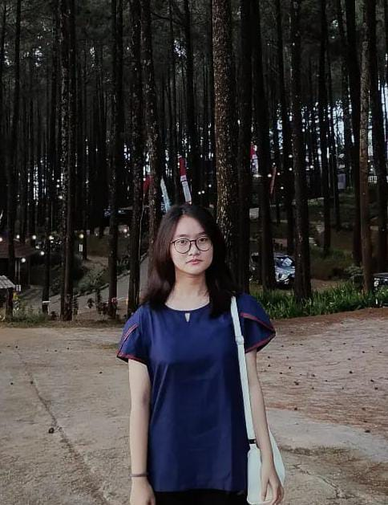

Halo, Saya Valen
Saya merupakan mahasiswa aktif Program Studi Teknik Informatika di Institut Teknologi Adhi Tama Surabaya (ITATS). Memiliki antusiasme mendalam dalam bidang rekayasa web frontend, perancangan estetika antarmuka pengguna (UI/UX), serta pengembangan sistem perangkat lunak yang responsif, intuitif, dan fungsional.
Berbekal kedisiplinan dan rasa ingin tahu yang tinggi, saya senantiasa mengeksplorasi ekosistem web modern untuk menciptakan produk digital yang tidak hanya berpenampilan memikat, namun juga memberikan solusi nyata atas kebutuhan pengguna.
Status
Mahasiswa Aktif
Lokasi
Surabaya, Indonesia
Minat
Frontend & UIUX
Pendidikan
Riwayat Studi
2022 - 2025
SEKOLAH MENENGAH KEJURUAN

SMK Kristen Petra
Jurusan Teknik Komputer dan Jaringan
Mempelajari dasar-dasar konfigurasi jaringan, sistem operasi, keamanan jaringan, hardware dan software komputer
2025 - Sekarang
PERGURUAN TINGGI

Institut Teknologi Adhi Tama Surabaya (ITATS)
Jurusan Teknik Informatika
Mempelajari dasar-dasar algoritma pemrograman, struktur data, manajemen basis data, pengembangan web modern, dan desain antarmuka pengguna
Keahlian
Teknologi dan perangkat yang saya gunakan untuk merancang perangkat lunak

HTML

CSS

JavaScript

Python

C++

Figma

Canva

Git & Github

Wireframe

VS Code
Komunikasi
Bekerja Sama
Problem Solving
Time Management
Bahasa Indonesia
Bahasa Inggris
Pengalaman
Rekam jejak praktik industri, karya proyek, dan sertifikasi

2024 (6 Bulan)
Solaris Digital Print & Offset
Sistem Informasi & Dashboard Manajemen Perpustakaan Sekolah
Berperan sebagai Frontend Developer untuk sistem manajemen perpustakaan SMA Negeri 14 Surabaya. Bertanggung jawab mengimplementasikan desain UI/UX menjadi antarmuka dashboard yang interaktif, serta melakukan integrasi data dari backend ke frontend untuk memastikan sinkronisasi data berjalan dengan baik
Agustus - Oktober 2026
Sistem Perpustakaan SMA Negeri 14 Surabaya
Praktik Kerja Lapangan (PKL) — Bagian Finishing & QC
Terlibat langsung dalam siklus produksi industri percetakan, mulai dari operasional mesin (cutting die cut, kiss cut, laminasi) hingga proses finishing produk. Bertanggung jawab melakukan Quality Control (QC) untuk memastikan material sesuai standar kualitas, serta mengelola input data keuangan harian ke dalam sistem untuk mendukung pencapaian target produksi tim

Oktober 2026
Parkova
Final - Aplikasi Smart Parking & Pemantauan Slot Parkir
Merancang alur pengguna (user flow), wireframe, hingga interactive prototype pada kompetisi UI/UX Design Universitas Muira Kudus untuk mengatasi kendala pencarian lahan parkir di area perkotaan melalui fitur pemantauan slot real-time dan navigasi interaktif
Lihat Prototype ↗

September 2026
Barter Go
Peserta - Aplikasi Barter untuk Penggunaan Kembali Barang Bekas
Merancang alur pengguna (user flow), wireframe, hingga interactive prototype pada kompetisi UI/UX Design Udayana untuk mengatasi kendala pencarian lahan parkir di area perkotaan melalui fitur pemantauan slot real-time dan navigasi interaktif
Lihat Prototype ↗
September 2026
ICETSD
Peserta - Aplikasi Barter untuk Penggunaan Kembali Barang Bekas
Merancang alur pengguna (user flow), wireframe, hingga interactive prototype pada kompetisi UI/UX Design Udayana untuk mengatasi kendala pencarian lahan parkir di area perkotaan melalui fitur pemantauan slot real-time dan navigasi interaktif
Lihat Prototype ↗
September 2026
Juara 2 Nasional — Short Movie Competition
Rakernas IndoCEISS 2026 - Tim "Quadra" ITATS
Meraih Juara 2 tingkat nasional bersama tim 'Quadra' ITATS pada kompetisi film pendek Rakernas IndoCEISS 2026. Berperan sebagai Talent (Aktor) yang bertugas menghidupkan karakter cerita dan menyampaikan pesan inovasi digital secara ekspresif kepada audiens, didukung dengan kemampuan komunikasi dan kolaborasi tim yang solid
Lihat Prototype ↗

Januari 2026
Informatics Coding Competition (ICC) 2025
Juara 1 - Kompetisi Pemograman Terstruktur
Memecahkan berbagai studi kasus algoritma pada kompetisi ICC Institut Teknologi Adhi Tama Surabaya (ITATS), mengimplementasikan logika pemrograman terstruktur dan optimasi kode untuk menyelesaikan tantangan komputasi dalam batas waktu yang ditentukan
 Lihat Program ↗
Lihat Program ↗